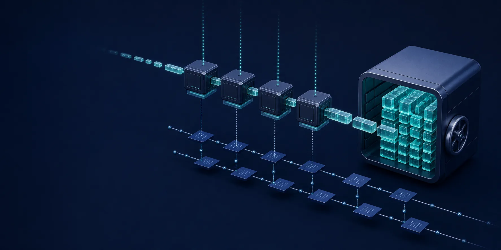

No partition data lives on the Agent.
Scale, replace, or roll Agents without moving replica logs or attaching persistent volumes.
Stateless Kafka-compatible messaging
A stateless Rust message queue committing durable records to S3 and ordered metadata to PostgreSQL.

Produce is acknowledged only after the immutable object exists and PostgreSQL commits its ordered span metadata.
Bounded batches flush on the configured time or size threshold.
OpenDAL writes unique objects across topics and partitions.
PostgreSQL allocates offsets and atomically publishes visibility.
Agents resolve ordered spans and read only the required bytes.
Scale, replace, or roll Agents without moving replica logs or attaching persistent volumes.
Java, librdkafka, franz-go, Flink, and Kafka Streams use the wire protocol.
Immutable shared objects support exact range reads and orphan cleanup.
Offsets, groups, transactions, ACLs, and object spans converge in PostgreSQL.
ApiVersions advertises handled versions and rejects unsupported behavior.
The dated acceptance result records exact clients, versions, fault cases, and unsupported physical broker behavior.
Debian and RPM packages include the binary, a hardened systemd unit, and an environment template. Installation does not start the service.
Start locally with Compose, inspect consistency semantics, then move the stateless Agent deployment to Kubernetes.
Keep compute replaceable and durable state in shared infrastructure.